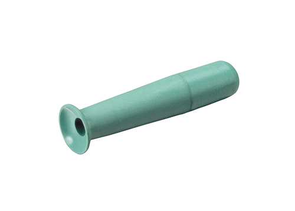

How to Apply Ortho-K Contact Lens (a.k.a. Dreamlens) By Yourself!
Back to Home
First of all...
*This is for Ortho-K lens only! These steps may not be available for normal
contact lenses. For normal contact lenses, please exit the website.*
Welcome!
This process will demonstrate the process of applying Ortho-K contact lenses
by yourself. If you had trouble putting them on yourself for the first time,
(which is the problem I went through) you are welcome to follow the procedure
that I write on this website
Why would you have to know this?
You would have to start practicing applying contact lenses by yourself at night,
for cases like when you stay late at night but when your parents are sleeping
but you want to apply your Ortho-K lens. You wouldn't be able to apply it
because your parents aren't there to help you! So, you would have to try
practicing in front of your parents and then gradually become more independent
as time goes on.
Materials
- Courage and Self-Esteem

CC0 License
In order to apply the contact lens by yourself, you need to have the courage
to do it. You have to be brave for putting the lens on your eye by yourself.
Self-esteem is also needed to believe in yourself that you wouldn't hurt
your eye with your lens (it's actually very easy too! It won't hurt your
eye)
- (Obviously) Ortho-K lens
- A Mirror
Steps and Process
1. Prepare Your Lens

Picture from "Evershine Optical" (evershineoptical.com.sg), by TANJH, written on Feb 11, 2021 from article "
Orthokerathology - is it safe?"
First of all, your task would be to prepare your lens. Pull it out of the
container, and then drop the water from the lens container by gently shaking
it off. Put the container on a table, and open the lid.
1a. What to do if your lens is "on" the lid?
Gently replace the lid in the original place (where it should be) with your spoid.
If possible, do not try to touch the lens with your hand while replacing it.
2. Grab Contact Lenses with Your Spoid

Picture from "Dry Eye Shop," (dryeyeshop.com) Product name "DMV Classic (for Ortho-K)
Get your spoid, and squeeze at the holder part. Then, touch the lens and then
release it. You have successfully grabbed the lens!
3. Drop your optive contact lenses (1 drop)
Picture from "Optive" (optive.co.za), main page
Your Ortho-K lens would have come with an optive contact lens solution. Place one
drop on the lens on the inner side.
4. Hold open your eyes with your fingers!
Picture from "Asian Eye Shop" (asianeyeshop.com), from article "About Contact
Lenses"
Remember, do not hold it for too long, or your eyes will become dry. Place your
spoid near your eye where you can apply the lens instantly after you hold open
your eyes. Open it and look straight. Gently push your spoid in your eye. When it is on
your eye, squeeze the spoid. Pull the spoid out while you are squeezing the spoid.
There you have it! Blink numerous times so that the lens will be in the right location and
reduce irritation in your eyes. Repeat steps 2-4 for your other eye. I recommend
doing the process for your right eye first!
How do you know if you are doing this right??
After you apply your lens, your eyes will feel uncomfortable. That is perfectly normal.
If you want to check if your lens is in the right position, you can try to open your
eyes with your fingers widely and see if it's in the middle. Or, you can try the technique
I use, which is pulling your lower eyelid down and blinking to see if your lens comes down.
If your lens comes down, it is a sign that you have applied your lens correctly.
Practice these steps every day, and then gradually become independent! Thank you
for visiting my website.
*For taking the lens off, wait for my next edition of the website!*